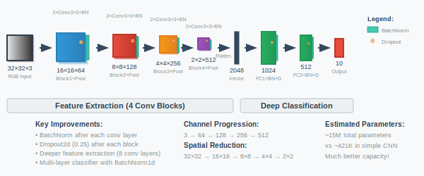

Back to AI Basics: Deeper Convolutional Neural Network (CNN)
Date Created: May 15, 2025
Date Modified:
Introduction
Last time, we built a basic CNN for MNIST digit classification. The simplicity of MNIST allowed us to focus on the core CNN concepts without getting bogged down in complexity. Now, do you think it can fair well on more challenging datasets like CIFAR-10 or CIFAR-100? Probably not, but for the sake of learning and knowing, let's try it out.
In case you missed it, here is the previous blog post where we built a basic CNN for MNIST. But the architecture is pretty simple: 2 convolutional blocks with 3x3 filters, ReLU activations, max pooling, and a fully connected layer, with dropout of 25%.
Basic CNN for CIFAR-10

For this task, we will only change the input channels from 1 to 3 (for RGB images) and adjust the fully connected layer input size to match CIFAR-10's spatial dimensions.
Basic CNN Architecture for CIFAR-10
- Input channels: 1 → 3 (RGB images)
- FC layer input: 3136 → 4096 (CIFAR-10 spatial dimensions)
- Same depth and structure otherwise
============================================================
CIFAR-10 Basic CNN Results Summary
============================================================
Final Train Accuracy: 85.09%
Final Test Accuracy: 74.75%
Total Parameters: 545,098
Total Epochs: 10
Training Time: 185.73 seconds
Train Loss: 0.4164, Train Acc: 85.09%
Test Loss: 0.8065, Test Acc: 74.75%
As we can see, even though 74.75% accuracy on CIFAR-10 is decent, it is far from usable in practice. Additionally, there is a significant overfitting gap of ~10% between training and test accuracy.
Improving the CNN Architecture
So in what way can we improve this basic CNN to achieve better performance on CIFAR-10? Yes, we can make it deeper and more complex. We will build a deeper CNN with more convolutional blocks, batch normalization, better initialization, and regularization techniques like dropout and data augmentation.
Architecture Enhancements:
- 4 conv blocks (vs 2): Progressive depth 3→64→128→256→512 channels
- BatchNormalization: After every conv layer for stable training
- Better initialization: Kaiming for ReLU networks
What is Kaiming Initialization?
One of the problems with deep networks is that gradients can vanish or explode as they propagate through many layers. These are problems during backpropagation in deep neural networks, especially deep feedforward or RNNs.
In short:
- Vanishing gradients: Gradients (partial derivatives) become very small as they're propagated backward through layers, leading to slow or stalled training. Most common with sigmoid/tanh activations or very deep networks.
- Exploding gradients: Gradients become very large, causing weights to update too drastically and leading to instability or divergence during training. Common with RNNs over long sequences, poor weight initialization, or, of course, very deep networks.
The Kaiming initialization method, also known as Kaiming He initialization or He normal initialization, is a technique for initializing the weights of artificial neural networks.
This method was introduced in the paper titled "Delving Deep into Rectifiers: Surpassing Human-Level Performance on ImageNet Classification" by Kaiming He, Xiangyu Zhang, Shaoqing Ren, and Jian Sun.
It sets the initial weights so that the variance of the activations remains stable and consistent across layers.
The Kaiming initialization method is calculated as a random number with a Gaussian probability distribution (G) with a mean of 0.0 and a standard deviation of sqrt(2/n), where n is the number of inputs to the node.
This is different from the Xavier initialization, which uses a uniform distribution and is more suitable for tanh or sigmoid activations.
Regularization Techniques:
- Data augmentation: Random crops, flips, color jitter
- Dropout2d: 25% in conv blocks, 50% in classifier
- Weight decay: L2 regularization in optimizer
- LR scheduling: Step decay every 5 epochs
This is a well-structured and solid CNN architecture—reminiscent of VGG-style networks but enhanced with BatchNorm after every convolutional layer, weight initialization, and a progressive increase in channel depth. Its strength lies in its modular design, a reasonable depth for testing, and Kaiming initialization for ReLU-based nets. It should perform much better on CIFAR-10 than the basic CNN.
============================================================
CIFAR-10 Deeper CNN Results Summary
============================================================
Final Train Accuracy: 83.24%
Final Test Accuracy: 86.45%
Best Test Accuracy: 86.45%
Total Parameters: 7,320,394
Training Time: 457.63 seconds
Overfitting Gap: -3.21%
============================================================
COMPARISON: Basic CNN vs Deeper CNN
============================================================
Basic CNN Test Accuracy: 74.75%
Deeper CNN Test Accuracy: 86.45%
Improvement: +11.70%
Basic CNN Parameters: 545,098
Deeper CNN Parameters: 7,320,394
Parameter Increase: 13.4x
Okay! So we got a pretty excellent results here. 86.45% test accuracy is solid for CIFAR-10, with only a 3.21% overfitting gap, and overall 11.7% improvement.
It seems like BatchNorm with data augmentation really helped, the model is well regularised. For 15 epochs, it took about 457 seconds to train (~30s per epoch), which is reasonable, given 7.3M parameters.
Will Deeper CCN still work without these techniques?
In this problem we are placing for ourselves? The performance will likely be damaged.
- Without BatchNorm, the model may struggle with internal covariate shift.
- Without Kaiming initialization, weights may be to spread out, leading to poor convergence.
- Without dropout, the model is likely to overfit on CIFAR-10, especially with 7M+ parameters.
- Without data augmentation, the model will be limited on data diversity.
- There may even be Vanishing problem as well, though it is more prominent with sigmoid/tanh activations.
So, in short, worse validating accuracy, massive train-test gap, internal covariate shift, diverge early.
Pushing Deeper CNN Further
Whenever we deal with practical model that classify images, CIFAR-10 and CIFAR-100 are always our go-to, and itt is a benchmark for many papers and models.
CIFAR-10 tests "Can your model learn?"
CIFAR-100 tests "Can your model scale?"
CIFAR-10 and CIFAR-100 form a somewhat natural difficulty ladder in terms of model capacity vs. task complexity.
So, let's try to scale our Deeper CNN to CIFAR-100, which has 100 classes, each with 600 images, and see how it performs. It will be the same architecture, but the final fully connected layer will be an output of 100 classes instead of 10.
============================================================
CIFAR-100 Deeper CNN Results Summary
============================================================
Final Train Accuracy: 46.62%
Final Test Accuracy: 53.57%
Best Test Accuracy: 53.57%
Total Parameters: 7,366,564
Total Epochs: 20
Training Time: 600.31 seconds
Tough! The model is struggling to learn on CIFAR-100: 53.57% test accuracy is far from usable, not to mention it is clearly underfitting. Sometimes, underfitting mean the model might not have enough epochs to learn yet.
============================================================
CIFAR-100 Deeper CNN Results Summary
============================================================
Final Train Accuracy: 51.25%
Final Test Accuracy: 57.29%
Best Test Accuracy: 57.29%
Total Parameters: 7,366,564
Total Epochs: 35
Training Time: 1093.35 seconds
Going from 20 → 35 epochs gave only ~4% gain. It's not even worth it to increase epochs at this point.
So, what is the problem here?
- Training Difficulty Scaling: As task complexity increases, models need to learn finer class boundaries and handle a more intra-class variance. This means we might have hit a bottleneck, not due to the model's architecture, but rather its capacity to learn complex features.
- Diminishing Returns from Depth: Adding depth past a certain point doesn't yield better performance, unless architecture supports it (e.g., residuals). So with an even deeper network, we might not see significant improvements.
Deeper networks help only up to the point they can be optimized and generalize. When task difficulty scales up and you don't adjust other factors (like width, augmentation, learning rate, architecture), depth alone gives less return.
To go further, we will need more than just depth. We will need an improved architecture.

Introducing Modern CNN Architectures
As of 2025, CNNs are still widely used, but their dominance has been overtaken in many areas—especially vision tasks—by Vision Transformers (ViTs) and hybrid models. That said, CNNs remain efficient and preferred for some real-time and resource-constrained tasks.
- CNNs (like EfficientNet, ConvNeXt) are still faster and lighter than ViTs for many edge/real-time tasks.
- ViTs (like Swin Transformer, DeiT, and SAM backbones) are state-of-the-art in accuracy for vision benchmarks but need more compute. They are more popular in research and large-scale industry models.
- Hybrid architectures (e.g., CoaT, LeViT) combine CNNs + attention — best of both worlds in some tasks.
The CNN is still a vast space. You can check out more from PyTorch models and pre-trained weights or Keras applications. You can also check out Hugging Face Vision Transformers for ViTs, hybrid models, and possibly more.
However, for this blog, we will focus on a handful of architectures, starting with...
Residual Network (ResNet)
One of the common problems with deep CNNs when adding more layers is the Vanishing/Exploding gradient problem. This makes it hard to train very deep networks, as gradients can become too small or too large, leading to poor convergence or divergence, which also leads to high training and test loss.
Proposed in 2015, researchers at Microsoft Research introduced a new architecture called Residual Network, or ResNet.
ResNet is all about minimising the Vanishing/Exploding gradient problem by introducing a core idea called skip connections (or residual connections) that allow gradients to flow more easily through the network. Instead of learning a direct mapping H(x), ResNet learns the residual mapping F(x) = H(x) - x, where x is the input.
What is a Residual, or Residual Block?
At its core, a residual block is a neural module that computes:
\[ \text{output} = F(x) + x \]
Where:
xis the original input to the blockF(x)is the output of the small neural network (usually a few conv + BN + ReLU layers)
x is added back in via an identity (skip) connection. This skip path bypasses the main transformation.
So, the residual block learns the difference between the input and output (i.e., the residual), which is easier, rather than trying to learn the output directly.
\[ F(x) = H(x) - x \implies H(x) = F(x) + x \]
This is important in very deep network, where layers may not be needed to transform data significantly, or the identity mappings might already be sufficient in parts of the network.
In giving the models a shortcut path, it has the flexibility to leave the data untouched (learn F(x)=0) or apply a transformation (learn F(x)≠0) as needed.
Think of it like this: Traditional layers try to mutate data every step - even when it doesn't help. Residual blocks can let data pass through unmodified if needed, and only nudge it when helpful. This can help to avoid degradation in performance as models go deeper.
There are multiple variations of ResNet with lots of layers. We will choose 18 layers since the purpose of this blog is to discuss the underlying concept, or ResNet-18 to be precise.
Key ResNet-18 Features:
- Skip connections:
out += self.shortcut(x)- the core innovation - 18 layers: 2+2+2+2 BasicBlocks + initial conv + final FC
- Efficient: ~11M parameters vs 7.3M custom CNN
- SGD + momentum: Better for ResNet training than Adam
Now, we have 2 ways to get ResNet-18: build it from scratch or use a pre-trained model. To use a pre-trained model, you can invoke a simple function below. For building from scratch, it is demonstrated in my notebook, feel free to poke around.
from torchvision.models import resnet18, ResNet18_Weights
# Load model with pretrained weights
weights = ResNet18_Weights.DEFAULT
model = resnet18(weights=weights)
Though you might be careful with using the pre-trained model above. The weights that specified is used for ImageNet, which is 224x224 high-res natural images dataset, completely different from 32x32 low-res images CIFAR dataset. You will might want to modify the fist conv layer and use smaller learning rates if you want to use it. Anyhow, here is the building from scratch performance:
ResNet-18 on CIFAR-10
============================================================
ResNet-18 on CIFAR10 Results Summary
============================================================
Final Train Accuracy: 91.77%
Final Test Accuracy: 88.75%
Best Test Accuracy: 88.84%
Total Parameters: 11,173,962
Total Epochs: 15
Training Time: 545.73 seconds
Overfitting Gap: 3.02%
============================================================
COMPARISON: Previous CNN vs ResNet-18 on CIFAR10
============================================================
Deeper CNN Test Accuracy: 86.45%
ResNet-18 Test Accuracy: 88.84%
Improvement: +2.39%
Deeper CNN Parameters: 7,320,394
ResNet-18 Parameters: 11,173,962
Parameter Efficiency: 1.53x
ResNet-18 on CIFAR-100
============================================================
ResNet-18 on CIFAR100 Results Summary
============================================================
Final Train Accuracy: 84.64%
Final Test Accuracy: 71.53%
Best Test Accuracy: 71.75%
Total Parameters: 11,220,132
Total Epochs: 25
Training Time: 893.19 seconds
Overfitting Gap: 13.11%
============================================================
COMPARISON: Previous CNN vs ResNet-18 on CIFAR100
============================================================
Deeper CNN Test Accuracy: 53.57%
ResNet-18 Test Accuracy: 71.75%
Improvement: +18.18%
Deeper CNN Parameters: 7,366,564
ResNet-18 Parameters: 11,220,132
Parameter Efficiency: 1.53x
Okay, we got some good insights here:
- Both models perform well on simpler 10-class problem, with only 2.39% increase. We can't really tell if skip connections method provide a benefit here or just a good weights initialization.
- For 100-class problem, ResNet-18 outperforms the previous Deeper CNN by 18.18%! We have already said that the previous deeper CNN can't handle the complex gradient flow issues. ResNet, with 1.53x more parameters, its identity mappings has delivered a better result, and potentially even better with more epochs.
Conclusion
It is no doubt that for understanding and exploring, the simplest of CNNs can give you a glimpse of how convolutional neural networks work and how it benefits the image classification domains, and possibly more. However, as we have seen, the more complex imageries, or bigger the number of pixels, the harder for these basics models to comprehend. The deeper CNNs with BatchNorm, Kaiming initialization, and regularization techniques can help us achieve better performance on more complex imageries. We also get to know a new architecture called ResNet, which is a great example of how to solve the vanishing/exploding gradient problem in deep networks.
In the next part of this Deep CNNs series, we will continue to explore other modern CNNs and its effectiveness in its own areas.
References
- He, K., Zhang, X., Ren, S., & Sun, J. (2015). Deep Residual Learning for Image Recognition. arXiv:1512.03385v1. Retrieved from https://arxiv.org/pdf/1512.03385
- PyTorch. (n.d.). torchvision.models.resnet18. Retrieved from https://docs.pytorch.org/vision/main/models/generated/torchvision.models.resnet18.html
- GeeksforGeeks. (2025). Kaiming Initialization in Deep Learning. Last Updated: 02 Apr, 2025. Retrieved from https://www.geeksforgeeks.org/kaiming-initialization-in-deep-learning/
- GeeksforGeeks. (2025). Residual Networks (ResNet) - Deep Learning. Last Updated: 07 Apr, 2025. Retrieved from https://www.geeksforgeeks.org/residual-networks-resnet-deep-learning/
- GeeksforGeeks. (2025). ResNet18 from Scratch Using PyTorch. Last Updated: 21 Apr, 2025. Retrieved from https://www.geeksforgeeks.org/resnet18-from-scratch-using-pytorch/